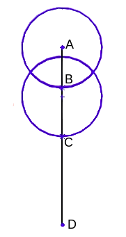
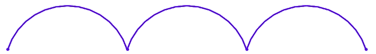
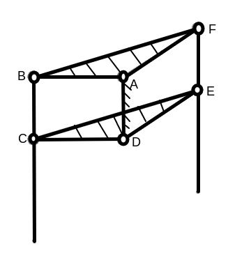

Novel Long Range Compound Linear Motion Mechanisms For use in the Design of Affordable Agricultural Robots
In all robotics applications, mechanical complexity is one of the major sources considerably increasing the cost and leading to low adoption. This paper presents the designs of 4 novel compound linear motion mechanisms with essentially unlimited range of motion for use in both fixed and mobile robots. This makes it possible to affordably scale fixed robots to commercial size farms as well as remove the complexity and related costs in mobile agricultural robots introduced by precise sensors for navigation. Three of the given mechanisms meet all the design aims required for successful adoption in agricultural robots. The second mechanism is recommended for further study.
Introduction
In the search for a suitable means of producing low-cost agricultural robots (ARs) with a view to increasing their adoption in agricultural processes, especially in developing countries and thereby making feasible a completely remote commercial agricultural system, the designs have been established of long-range compound linear motion mechanisms (LMMs) of different mechanical complexity which can be used in the design of both fixed and mobile robots. A combination of both legs and non-circular wheels is used to achieve linear motion to a precision that is acceptable for agricultural work and some of the more precise mechanisms are expected to have sufficient precision for manufacturing applications. The set of LMMs consists of mechanisms designed using both rigid and flexible links, the flexible links being optionally guided by cam grooves. A compound LLMs consists of a first LMM that moves either continuously or intermittently, as the design constraints of the mechanism will allow, along another LMM which acts as the frame for he first LMM. The second LLM moves intermittently in a fashion similar to a walking mechanism along the frame of the machine. The compound LLM can act either as an “open ground” mobile walking mechanism or by the addition of a gripping mechanism act as a traditional long range LLM. This setup eliminates the need of having in cartesian fixed robot an expensive drive system that is as long as the length of displacement required along any axis, reducing the requirements for linear motion to a self-driven LLM [1] and a support structure for it which due to the flexibility of the LLMs can be any locally available material including timber, cables, fencing wire, concrete walls, etc that has sufficient strength for the intended application. By this means the cost of ARs requiring LMMs can be greatly reduced. It also enables a mobile robot to be controlled using the same control strategies used for fixed robots. No design we are aware of has heretofore achieved this controller simplicity. While the primary intended application of the mechanisms is in fixed cartesian robots and mobile robots in structured environments, they can also be used in cable driven robots. Many other uses for the LMMs are left to the imagination of the creative mind.
ARs have become an increasingly important tool in modern farming due to their ability to improve efficiency and productivity. By automating tasks such as planting, watering, weeding, and harvesting, they can reduce the need for labor and allow farmers to focus on other aspects of their operations. They also allow for more working hours. In addition, the use of precision techniques and reduced reliance on chemical inputs can help to reduce the environmental impact of farming [2]. The big data generated by monitoring robots as well as by more experienced farmers can also be used more effectively by the ARs than by farmers. [3] ARs also improve food safety by reducing the risk of contamination during handling and processing. It has also been shown in an economic study [2] which analyzed three different robotic weeding applications for the particular case of high-value crops that the cost of robotic applications is lower than the cost of conventional systems. It is clear that the environment, farmers, consumers as well as robotic companies all stand to benefit from wide adoption of ARs.
A new area that has hardly been explored is that of remote farming systems. In some African countries, urban households own 5–35% of total agricultural land and 60% of medium-scale farmers are urban-based [4]. These urban-based farmers are either land owners or lease the land that they use. The process of leasing land is not an easy one, neither is the management of the remote farms. Remote farming, especially on small and medium-sized farms (SMFs) is often based on trust between the farm managers and the farmer, and losses are often incurred due to the farm manager doing substantial work on the farm without the physical presence of the farmer to supervise the work. An adoption of ARs that require little or no supervision would make remote farming far easier and more profitable by eliminating the losses incurred due to the substandard work of the farm managers.
The SMFs form the larger part of the world’s agricultural land. In the European Union, these farms respectively represent 40%, 29%, and 14% of the farms, a total of 83%. [3] Likewise in Africa, 90% of farm households have between 0 and 5 hectares. [4] However, the adoption of ARs is skewed against these towards the resourceful large farms [3]. The main barriers to the adoption of ARs by small and medium-sized farms are the high costs of these technologies and the lack of suitable financing options. These barriers can be particularly significant for farms in developing countries, where the economic environment may be less favorable for investment in new technologies. In addition, SMFs may have limited access to the technical expertise and support needed to implement and maintain ARs. And even where service personnel may be found, there are high costs in traveling distances for these to the farms [2].
In all robotics applications, mechanical complexity is one of the major sources considerably increases the cost which results in failure [5]. It has been shown in a study that among the main cost contributors for ARs are the sensors for precision localization, or hardware for navigation [3]. It is projected by the authors of this study that hardware costs should diminish over time as new technologies and low-cost high-quality sensors hit the market. For fixed robots like Farmbot, the cost factors are a bit different. While it is possible to operate these using open-loop control and thus eliminate the need for any positioning sensors, their cost increase in proportion to their size. The long guides needed for a long range of motion are difficult and expensive to manufacture. [1]. In May 2020 the production of Farmbot MAX which was the largest model of the range of Farmbot Robots was put on hold pre-launch. Among the reasons given by Farmbot for this was that it was too expensive [6]. The significant increase in the cost of Farmbot MAX relative to the other models is due among other factors to the extra length of aluminum V-slots used for the tracks. Considering that the aluminum itself is a good candidate for the scrap metal business in developing countries, the use of such a robot in outdoor gardens where it would be vulnerable to theft is impractical.
Another reason cited by Farmbot was that scaling a Farbot requires “extra engineering”. It has been noted that noted that long guides are difficult and expensive to manufacture. Further, when toothed belts are used, the elasticity and compliance in the system affects the accuracy of positioning and may cause vibration, and thus requires special techniques for motion control [7], [8]. As a solution to mitigate both the technical and financal challenges of scaling LLMs the author proposes a compound LMM which consisting of a short LMM that is itself moved discretely along the frame of the machine.
For mobile robots, a weeding robot called Tertil produced by iRobot demonstates how to eliminate navigation sensors which a robot can do without for its intended application. Tertil moves in its environment using a bump-and-go algorithm which eliminates the need for expensive localization sensors. While this algorithm has this advantage, it also has its drawbacks. Bump-and-go cannot be used for some agricultural applications such as crop establishment which require structured movement within the farm and it also requires plant guards around young plants to prevent the robot from running over them. Although Tertil, which is being sold at $349.00, is still too expensive for developing countries, it illustrates how to reduce the cost of robots by eliminating unnecessary sensors for a particular application.
But to practically remove the need for navigation sensors for mobile robots, our work proposes to simulate structured, or controlled environments, outside in the open fields by diving each farm using GIS data into small farms of the same size as the workspace of the robot. Then within each farm, the robot works as a fixed robot using LMMs and control strategies of fixed robots. The robot uses a secondary set of LMMs to move from one small farm to the next. This setup describes a compound robot which is by definition a fixed robot on a mobile robot. It eliminates some of the cost factors of mobile robots as well as those of fixed robots and combines the advantages of both (summarized in Table 1) into a single compound robot. Further, the use of a single type of simple mechanism means that the robots are easily serviceable even by people with limited technical expertise. In the humble understanding of the author, the key to building affordable robots lies in the design of a compound long-range LLM. Among the designs presented are LLMs which by the simple addition of legs transform into walking mechanisms thus converting a fixed LLM into a mobile, or compound, LLM while maintaining the same control strategies used for the fixed LLM. The compound LLM is provided with a means of gripping the support structure.
Linear-motion mechanisms generally consist of a load-bearing anchor or frame and a support structure (called the “guide”) that guides a portion of the mechanism (called the “carriage” or “shuttle”) in linear translation. The mechanism’s accuracy is due in no small measure to the accuracy of the guidance system. Depending on the structural material used for the fixed LLM an accuracy of up to 0.45 mm can be achieved using aluminum V-Slot Extrusion with built-in Linear Rails [9]. This makes some of the proposed designs good candidates for manufacturing applications.
| Fixed Robots | Mobile Robots | |
|---|---|---|
| 1 | Controller Simplicity | Large work area |
| 2 | Inexpensive components | Working in unstructured environments |
Design Aims
The compound LMMs should behave as nearly as possible to ordinary LLMs so that the same control methods used with normal LLMs can be used for them. If the mechanims cannot have a constant velocity throughout a single cycle, then it is acceptable to have different constant velocities for different sections of the cycle so that the relationship between the overall displacement and the velocities is linear.
The proposed mechanisms have the flexibility of using any type of linear motion mechanism for the first LMM which forms the fixed part of the compound LMM. In the first case, an externally powered system can be used to convert rotary motion to linear motion such as using a toothed belt, driven by a rotational motor through a pulley, to power a translational load [10]. Or a self-powered drive system can be used to produce the linear motion [1]. For the second mechanism, there are many possible designs for achieving the linear motion.
The design aims (given in Table 2) were to achieve the most simple design which can work as a fixed LLM and with only slight modifications work as a mobile or compound LLM while maintaining the same control methods used for the fixed LLM.
| Design Aim | Purpose | |
|---|---|---|
| 1 | The use of a single motor per axis. | To reduce cost and simplicity of control. |
| 2 | Straight line motion (\(u_z = 0\)). | Energy efficiency and simplicity of gripping mechanism. |
| 3 | The second intermittent motion to be controlled by the first LLM. | To reduce cost and simplicity of control. |
| 4 | Uniform velocity of both LLMs for constant input motor speed (\(u_x = constant\)). | Simplicity of control. |
| 5 | Means of gripping for the second LLM. | Accuracy of second LLM displacements. |
| 6 | Constant pressure angle for legs of second LLM. | The legs are not placed in bending by the weight of the robot [11]. |
| 7 | Fixed gait for the second mechanism with foot placement on the ground at regular constant intervals. | To allow for scalability of the robot height. |
| 8 | Rigid links. | Structural rigidity and to provide high accuracy in positioning [1]. |
When these aims were studied it became apparent that it is difficult to achieve all in a single mechanism. On the mechanisms described, only the last one achieves all of these aims. However, the other mechanisms described perform better under the benchmarks set by these aims compared to the last mechanism described. Each of the mechanisms, with their specific trade-offs, would fit better a particular application than the rest of the mechanisms.
Given that the first LLM of the compound LLMs described is a standard LLM, much of the work goes into the second LLM. The following description is of a leg mechanism that can be used with as few as 4 links using rigid links and can also be used with flexible links and cam grooves to trace any desired footpath.
A Recirculating Leg Mechanism using a Parallelogram Linkage
The First Configuration
A recirculating leg mechanism has been described as one that “treats the singly actuated leg as a single-spoked rimless wheel” [5]. This means that the leg completes a rotation about some point. Some of the recirculating legs existing in the literature include rimless wheel, rimless wheel with independetly actuated spokes [12] and the compliant legs of Rhex [5]. In all of these designs, the rotation of the leg is about a single point on the leg (the axle). Recirculating have the advantage of reduced mechanical complexity by the restriction of one actuator per leg [5] and the system symmetry also allows an identical operation with the body up-side-down [5]. They however, have the disadvantage of a step length that is dependent on the leg length making the robot height to be practically limited by the leg length. The dependence of the step length on the leg length also increases control complexity when the legs are used as part of an LLM. The legs are also assumed to be massless [5]. However, if the mass of the legs is taken into account, then it is more energy efficient to recirculate the legs through a smaller radius than half the leg length, assuming the center of mass of the less is at its center. We describe a system for recirculating one or more legs using a single actuator in a more energy efficient way and in a manner in which the step length is independent of the leg length. Figure 1 shows the loci of two points on two different types of recirculating legs.



The 2 loci in Figure 1 (b) are generated by two points on the coupler of a 4-bar linkage with the Grashof condition \(s + l = p + q\) and with equal links opposite each other which is called a parallelogram linkage. The coupler acts as the leg for the parallelogram mechanism. The radius $R_{AB} is the crank length $Traditionally the 4-bar linkage is one of the least candidates for synthesizing a walking mechanism. This is because while several closed curves can be generated by a point on the coupler of a four-bar linkage of \(s+l < p+q\) which may appropriately represent the footpath of a walking mechanism [11], all points on the coupler of the parallelogram linkage trace a circular path. With this locus as the footpath, the stride would be infinitely small [11]. Further, parallelogram mechanisms suffer from the singularity condition which occurs twice in the cycle when the links are collinear.
Using the axle path shown in Figure 1 (c) as opposed to a straight line mitigates the the problem of an infinitely small stride. The radius of the axle path arc is equal to the crank length \(R_{AB}\). The arc begins at the point at which the foot contacts the ground and ends at the point at which the foot loses contact with the ground. As such it is not a constant arc. The footpath, the stride length and therefore the duty factor (the ratio of the part of the walking cycle during which the leg makes contact with the ground) are also not constant. For an anterior extreme position angle \(\theta_{AEP}\) and posterior extreme position angle \(\theta_{PEP}\), the stride length can be simplified to: \[L_{stride}=|R_{AB}(Cos(\theta_{PEP})-Cos(\theta_{AEP}))|\]
The elimination of the change point condition introduces further complications into the design for a 4-bar parallelogram mechanism with a single leg. But it becomes a trivial matter if more couplers (legs) are added. An arrangement can then be achived in which there is no point at which all the links are collinear. Figure 1 (e) shows an arrangement having 5 links with two of the links acting as legs.
The velocity being \(v_x=R_{AB}\omega_{crank} Cos(\theta)\) is not constant. Thus this design violates design aims 4 and 2. It is, however, possible to achieve a straight line of motion by the addition of at least two more links for a system with two legs. Figure 1 (f) shows a 2 legged walking mechanism with a height leveling mechanism having 3 links. The purpose of the third link is to control the height of the robot by connecting the pin joint between the other two links at the desired height on the third link. Using this configuration, reducing the robot height below the axle connecting the upper crank to the legs requires a corresponding increase in leg length from the minimum.
For the configuration in Figure 1 (f) \(\theta_i\) is the input and the position of L is the output. During the protraction of the leg FE, when the leg BC is on the ground, BC is the fixed link.
Coordinates of C: \((0,0)\)
When both legs are on a flat ground, \(\theta_{i0} = (180 - \theta_{CDE})/2\)
Coordinate of D: \((R_{AB} Cos(2\theta_{i0} - \theta_{i}), R_{AB} Sin(2\theta_{i0} - \theta_{i}))\)
Coordinate of E: \((R_{AB} (Cos(2\theta_{i0} - \theta_{i}) - Cos(- \theta_{i})), R_{AB} (Sin(2\theta_{i0} - \theta_{i})+ Sin(\theta_{i})))\)
Length \(L_{CH}=R_{AB} Sin(90-\theta_{CDE}/2)\)
Length \(L_{IK}=R_{AB} Sin(90-\theta_{CDE}/2)\)
Angle of link CE, \(\theta_{2} = Sin^{-1}(\frac{(Sin(2\theta_{i0} - \theta_{i})+ Sin(\theta_{i}))}{Sin(90-\frac{\theta_{CDE}}{2})})\)
Coordinates of H: \((R_{AB} Sin(90-\theta_{CDE}/2) Cos(Sin^{-1}(\frac{(Sin(2\theta_{i0} - \theta_{i})+ Sin(\theta_{i}))}{Sin(90-\frac{\theta_{CDE}}{2})})), R_{AB} Sin(90-\theta_{CDE}/2)(\frac{(Sin(2\theta_{i0} - \theta_{i})+ Sin(\theta_{i}))}{Sin(90-\frac{\theta_{CDE}}{2})}))\)
For simplicity, since \(L_{CH}=L_{HE}\), \(L_{CH}=L_{IK}\), and \(z_{G} = z_{H}\) then since \(z_{C} = constant\), it follows that
\[u_z = 0\]
Thus design aim 2 is fulfilled. Velocity analysis of this configuration is beyond the scope of this work. By the use of an LLM anchored at point L to drive the legs, constant velocity is obtained. Design aim 1 can also be achieved for example if a single leg is used to drive an axis of the machine. However, different designs will fit different applications, and designing to meet this aim may introduce mechanical complexities which may outdo the gains.
Parallelgram Straight Line Motion
The design of Figure 1 (f) works only in theory since with the additional 3 links it is not possible to position all the links in space so as to have no link impeded by any other link during the rotation of the cranks. The following is the description of a cam profile for use in achieving straight line motion (the cam has straight line motion supported by the legs). Either of two gaits can be achived. The first having continuous motion of the legs in which when one leg is in protraction the other is in retraction. The second gait has dwell periods when both of the legs are on the ground with none moving relative to the other.
There are two radii: \(R_{AB}\) as half the distance between the two legs and \(r_d\) the dwell offset radius. \(r_d=r_fR\) with \(r_f ∈ [0,1]\). The cam profile is a parametric curve (illustrated in Figure 2) of: \[x_{(t)}=t+(R_{AB}+r_d) Cos(\frac{t}{2 r_d}* Pi)\] \[y_{(t)}=(R_{AB}+r_d) Sin(\frac{t}{2 r_d}* Pi)\]
A simpler option for achieving straight line motion for a parallelogram is using the cam profile described in Section 6 which allows straight line motion by changing the mechanism’s gait from continuous walking to intermittent walking.
Either of two configurations is required to practically build a system with multiple legs driven by a single actuator and sharing the same cranks. The first configuration has been described having the fixed link (AD) in the midplane between the plane having coupler BC and coupler FE. This first configuration works for a system with two legs.
The Second Configuration
To build a system with more than 2 legs requires that the two cranks (\(ABF\) and \(CDE\)) be placed in different planes on opposite sides of the couplers (\(CB\) and \(EF\)) which are in the midplane. The fixed link is joined to the two couplers from planes further away from the midplane. Figure 3 illustrates this setup. This way it is possible for the legs to recirculate from the power stroke to the return stroke and back to the power stroke without being impeded by any other link.
To prevent the coupler from pivoting about any point, at least one of the following two conditions must also be met: \[xA != xD\] \[zA != zD\]
The following condition must also be met for the legs to recirculate: \(L_{AD} <= R_{AB}\)
This setup achieves design aims 1, 6, 7, and 8. It is also possible with a few modifications to achieve aim 5. However, it fails to achieve aims 2, 3, and 4. With this set up the legs are recirculating and there is a point at which two legs are collinear. Since the couplers are all in the same plane, it follows that the lowest point of the upper coupler must be higher than the highest point of the lower coupler when they are collinear. For a crank length \(R_{AB}\) and N couplers, the angle \(\theta_c\) between any two couplers, if they are uniformly spaced, is \(\theta_c = 360/N\)°. In the simplest case with coupler thickness \(T_c \to 0\), the maximum coupler height,
\[H_c = 2R_{AB}Sin(\theta_C/2)\]
The loci of the pin joints connecting the coupler to the two cranks are circular paths. However this setup can be used with any other desired path generated by any other mechanism or by cam grooves as long as the conditions for the positions of the paths, leg, and pin joints are met. The result is a walking mechanism with any number of legs all driven by a single motor with the foot tracing any arbitrary locus and fulfilling the design aims 1,6, 7 and 8. while modifying the path requires more complex mechanisms beyond the scope of this work unless flexible links and cam grooves (as described in Section 5) are are used or non circular wheels (given in Section 6), it makes it easier to achieve the remaining design aims 2, 3, and 4.
Since the coupler height (or leg length) is limited by the crank length \(R_{AB}\), it follows that the maximum robot height that can be achieved using this set-up is practically limited by the crank length. And although the crank length can theoretically be increased without limit, this action worsens how much the synthesized mechanism misses design aim 3 making it much less practical. To overcome these limitations, the design of a hollow leg for use with the parallelogram linkage is described.
A Hollow Leg for a Recirculating Leg System
This design allows the use of longer legs that descibed in Section 3.3 by allowing the upper legs to pass “within” the lower legs when any two legs become collinear. Figure 4 shows the design of such a leg. The principle applied here is that which allows glasses or any other tubular structure to be stacked inside each other. For two hollow objects to be stacked inside each other if their shapes are symmetrical about the central vertical plane, it is required that the distance \(d_x(z)\) between any two similar points on each side of the plane increase with height z. If the sole of the leg is flat, then this condition is not fulfilled at the sole and this increases the minimum height at which one leg can pass through another. In the simplest case where \(T_c \to 0\), the minimum height required for one leg to pass through another is found by solving the following equation. of any length while maintaining constant the height of vertical payload displacement. \[d_x(z_0) = L_{sole}\]
Rimless Wheel with Constant Pressure Angle
The rimless wheel, as the name suggests, is a wheel without the rim and was first mentioned as a model of walking by Margaria [13]. For practical applications, the rimless wheel has several advantages. For instance, the stable region for a rimless wheel is very large [14]. However, this also introduces several challenges that limit its practical application. An example is that the step length is a function of the leg length (or robot height). [12] For rimless wheels with independently actuated spokes the ability of a robot to adjust its height, and thereby adjust its step length, allowing it to move in a manner best suited to fit the situation is an advantage. However, for a passive rimless wheel, the relationship between the robot height and the step length is a disadvantage as with the leg described in Section 3 since it limits the practical maximum height of the robot. Further, the introduction of more degrees of freedom into a rimless wheel by the introduction of independently actuated spokes increases the complexity of control as well as the cost of the robot.
Figure 5 illustrates a rimless wheel having a constant pressure angle. it achieves design aims 1, 6, 7, and 8 and fails on 3 and 4. It is possible with a few modifications to achieve aim 5. Design aim 2 (straight line motion) can also be achieved by the use of a cam groove on the wheel (described in Section 6). This mechanism is synthesized using the leg described in Section 3. For a given crank length \(R_{AB}\), the amplitude of the arc traced by the axle remains constant and independent of the leg length. The step length is also constant. Theoretically then the robot’s height is not limited by the leg length. Figure 5 (c) shows a kinematic equivalent of this mechanism using a normal rimless wheel. Kinematic analysis of this wheel is beyond the scope this this work.
Flexible Links and Cam Grooves
Using flexible links there is no limit to the number of mechanism that can be synthesized. As such the work of this section is limited to describing the work of the flexible links. The two configurations described in Section 3 are also used here. Figure 6 (a) illustrates a concept for a class 1 legged LLM using a chain. The legs are connected to the chains. Figure 6 (b) and Figure 6 (c) are practical implementations of the concept.
The design of Figure 6 (c) has the advantage that it has grooves which completely elimites slip in the x direction. The grooves are formed by arcs with an empirical center angle of 22.5° with a radius of R both obtained using the foot path given in Figure 6 (d). The radius of the sprocket at the lower corners is also R. The length of the leg measured from the center of the sprocket axle must be \(2R\) for the legs to mate with the grooves.
The legs of this mechanism slide inside the grooves of the rail making it require a lot of lubrication. Further, for legged class 1 compound LLMs the legs can only establish point of line contact with a flat ground and it is not possible to use grooved rails with legs longer than \(2R\). Class 2 mechanisms offer advantages over this class of mechanisms.
Class two LLMs using flexible links are designed using legs as described in Section 3. Figure 7 illustrates this mechanism.
Universal Linear Motion Wheel
The following is a description of a mechanism that meets all the design aims and is used by both the mechanisms described in Section 3 and Section 4 to achieve straight line motion and is therefore the mechanism of greatest import and interest. It is based on the design of a wheel modified to have intermittent motion.
A wheel has the advantage of straight line motion, higher speed and greater stability on relatively flat ground. A design has been implemented of a bycycle with a wheel split into several parts [15]. By rotating all the different parts together they contact the ground at different periods and act together as a single wheel. However, there is still theoretically a line contact between the compound wheel and the ground at any instant and therefore no advantage over a normal wheel in terms of tractions. The use of tracks distributes weight evenly over a larger surface area, providing better traction on soft or uneven surfaces.
DESCRIPTION REDACTED. Contact author for full access.
Conclusion and Future Work
This paper presents four novel types of compound linear motion mechanisms for increasing the range of linear motion for use in the design of affordable fixed and mobile robots. Mobile robots are treated as 2 DOF linear motion mechanisms moving on flat ground. Mechanism 4 meets all the design aims, offers the greatest mechanical simplicity and is used by both mechanisms 1 and 2. It is therefore the mechanism of greatest interest. Mechanism 3 does no meet design aim 8. Mechanism 4 only achieves intermitted motion when used as a walking mechanism which mechanism 3 has continuous motion. However, it is easier and simpler to build robots that turn without slip using mechanism 4 than mechanism 3. For constrained LLM, rope climbing and cable robots, mechanism 4 offers a better alternative than mechanism 3 due to its larger surface area for clamping.
Future work will focus on exploring the performance of built prototypes of mechanism 4 against existing types of LLMs, especially the stiffness provided by the clamping mechanisms as well as the precision of the unconstrained mechanism. The performance of mobile robots built using these mechanisms in both structured and unstructured environments will also be studied.